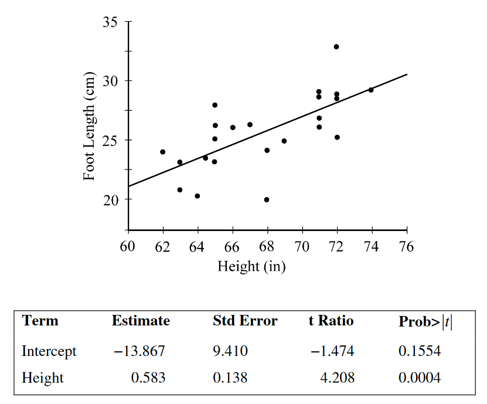

A statistics teacher wants to determine whether there is a linear relationship between high school students' heights, in inches (in), and the lengths of their feet, in centimeters (cm). The teacher obtains height and foot-length measurements for a random sample of 23 students at the high school and generates the following graph and computer output.

Provided that the assumptions for regression inference are satisfied, which of the following provides a 95 percent confidence interval estimate of the slope of the population regression line for predicting foot length from height?